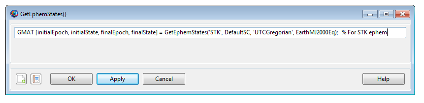

GetEphemStates() — Function used to output initial and final spacecraft states from an ephemeris file
[initialEpoch, initialState, finalEpoch, finalState] =
GetEphemStates(ephemType, sat, epochFormat, coordinateSystem)
Inputs:
ephemType : Ephemeris type ('STK', 'SPK', 'Code500')
sat : Spacecraft with an associated ephemeris file
epochFormat : String in single quotes containing a valid epoch
format for the resulting epoch output
coordSystem : CoordinateSystem for the resulting state output
Outputs:
initialEpoch : String of initial epoch on the file in requested
epochFormat
initialState : 6-element Array in the requested coordinateSystem
finalEpoch : String of final epoch on the file in requested
epochFormat
finalState : 6-element Array in the requested coordinateSystemGetEphemStates() is a special function that allows you to output initial and final spacecraft ephemeris states from a generated spacecraft ephemeris file. The GetEphemStates() function can query through the following ephemeris types: STK-TimePosVel (i.e. STK .e ephemeris), spice (SPK) and Code-500. You can request the resulting initial epoch, initial state, final epoch and final state in the epoch format and coordinate system of your choice.
The initial state output stored in the
initialState array corresponds to the state in the
ephemeris file at ephemeris file's initial epoch. Similarly, the final
state output stored in the finalState array corresponds
to the final state in the ephemeris file at ephemeris file's final epoch.
You can request both the initial and final epochs in any of the epoch
formats that GMAT supports. Also both initial and final states can be
requested in any of GMAT's default or user-defined coordinate
systems.
See Also: EphemerisFile, CoordinateSystem, Spacecraft
|  |
The GetEphemStates() GUI is a very simply one and it simply reflects how you implement this function in the script mode. It is easiest to work with GetEphemStates() function in the script mode.
Before using GetEphemStates() function to query
through either STK .e or Code-500 ephemeris files, you must first set the
STK .e or Code-500 ephemeris files to Spacecraft
resource's script-only field called EphemerisName
(i.e.
Spacecraft.EphemerisName).
The STK .e or Code-500 ephemeris files can be set to this script-only
EphemerisName field either through a relative or an
absolute path.
When using GetEphemStates() function to query
through a spice ephemeris, you do not have to use
EphemerisName field at all. Rather you must set spice
ephemeris file to a Spacecraft resource's field
called OrbitSpiceKernelName (i.e.
Spacecraft.OrbitSpiceKernelName).
The spice ephemeris file can be set to
OrbitSpiceKernelName field either through a relative
or an absolute path.
The Examples section will show simple examples in how to use GetEphemStates() function to extract initial and final spacecraft states for all three STK .e, Code-500 and Spice ephemeris types.
First run only 'Example 1A' to generate STK-TimePosVel (i.e. STK .e) ephemeris file. Now run 'Example 1B' that shows you how to read through a generated STK .e ephemeris file and retrieve spacecraft's initial/final states in the desired epoch format and coordinate system. Before running Example 1B, make sure that you put 'STK_Ephemeris.e' ephemeris file in the same directory as your main GMAT script
%% Example 1A. Generate STK .e ephemeris file:
Create Spacecraft aSat
Create Propagator aProp
Create EphemerisFile anEphmerisFile
anEphmerisFile.Spacecraft = aSat
anEphmerisFile.Filename = 'STK_Ephemeris.e'
anEphmerisFile.FileFormat = STK-TimePosVel
BeginMissionSequence
Propagate aProp(aSat) {aSat.ElapsedDays = 1}
%%% Example 1B. Read through .e ephemeris file using GetEphemStates():
Create Spacecraft aSat
aSat.EphemerisName = './STK_Ephemeris.e'
Create Propagator aProp
Create EphemerisFile anEphmerisFile
anEphmerisFile.Spacecraft = aSat
anEphmerisFile.Filename = 'STK_Ephemeris.e'
anEphmerisFile.FileFormat = STK-TimePosVel
Create Array initialState[6,1] finalState[6,1]
Create String initialEpoch finalEpoch
Create ReportFile rf
BeginMissionSequence
Propagate aProp(aSat) {aSat.ElapsedDays = 1}
[initialEpoch, initialState, finalEpoch, finalState] = ...
GetEphemStates('STK', aSat, 'UTCGregorian', EarthMJ2000Eq)
Report rf initialEpoch initialState finalEpoch finalStateFirst run only 'Example 2A' to generate a Code-500 ephemeris file. Now run 'Example 2B' that shows you how to read through a generated Code-500 ephemeris file and retrieve spacecraft's initial/final states in the desired epoch format and coordinate system. Before running Example 2B, make sure that you put 'Code500_Ephemeris.eph' ephemeris file in the same directory as your main GMAT script
%% Example 2A. Generate Code-500 ephemeris file:
Create Spacecraft aSat
Create Propagator aProp
Create EphemerisFile anEphmerisFile
anEphmerisFile.Spacecraft = aSat
anEphmerisFile.Filename = 'Code500_Ephemeris.eph'
anEphmerisFile.FileFormat = Code-500
BeginMissionSequence
Propagate aProp(aSat) {aSat.ElapsedDays = 1}
%%% Example 2B. Read through Code-500 ephemeris file using GetEphemStates():
Create Spacecraft aSat
aSat.EphemerisName = './Code500_Ephemeris.eph'
Create Propagator aProp
Create EphemerisFile anEphmerisFile
anEphmerisFile.Spacecraft = aSat
anEphmerisFile.Filename = 'Code500_Ephemeris.eph'
anEphmerisFile.FileFormat = Code-500
Create Array initialState[6,1] finalState[6,1]
Create String initialEpoch finalEpoch
Create ReportFile rf
BeginMissionSequence
Propagate aProp(aSat) {aSat.ElapsedDays = 1}
[initialEpoch, initialState, finalEpoch, finalState] = ...
GetEphemStates('Code500', aSat, 'TDBGregorian', EarthMJ2000Ec)
Report rf initialEpoch initialState finalEpoch finalStateFirst run only 'Example 3A' to generate a Spice ephemeris file. Now run 'Example 3B' that shows you how to read through a generated spice ephemeris file and retrieve spacecraft's initial/final states in the desired epoch format and coordinate system. Before running Example 3B, make sure that you put 'SPK_Ephemeris.bsp' ephemeris file in the same directory as your main GMAT script
%% Example 3A. Generate a Spice ephemeris file:
Create Spacecraft aSat
aSat.NAIFId = -10025001;
aSat.NAIFIdReferenceFrame = -9025001;
Create Propagator aProp
Create ImpulsiveBurn IB
IB.Element1 = 0.5
Create EphemerisFile anEphmerisFile
anEphmerisFile.Spacecraft = aSat
anEphmerisFile.Filename = 'SPK_Ephemeris.bsp'
anEphmerisFile.FileFormat = SPK
BeginMissionSequence
Propagate aProp(aSat) {aSat.ElapsedDays = 0.25}
Maneuver IB(aSat)
Propagate aProp(aSat) {aSat.ElapsedDays = 0.25}
%%% Example 3B. Read through a Spice ephemeris file using GetEphemStates():
Create Spacecraft aSat
aSat.NAIFId = -10025001
aSat.NAIFIdReferenceFrame = -9025001
aSat.OrbitSpiceKernelName = {'./SPK_Ephemeris.bsp'}
Create Propagator aProp
Create ImpulsiveBurn IB
IB.Element1 = 0.5
Create EphemerisFile anEphmerisFile
anEphmerisFile.Spacecraft = aSat
anEphmerisFile.Filename = 'SPK_Ephemeris.bsp'
anEphmerisFile.FileFormat = SPK
Create Array initialState[6,1] finalState[6,1]
Create String initialEpoch finalEpoch
Create ReportFile rf
BeginMissionSequence
Propagate aProp(aSat) {aSat.ElapsedDays = 0.25}
Maneuver IB(aSat)
Propagate aProp(aSat) {aSat.ElapsedDays = 0.25}
[initialEpoch, initialState, finalEpoch, finalState] = ...
GetEphemStates('SPK', aSat, 'UTCGregorian', EarthMJ2000Eq)
Report rf initialEpoch initialState finalEpoch finalState